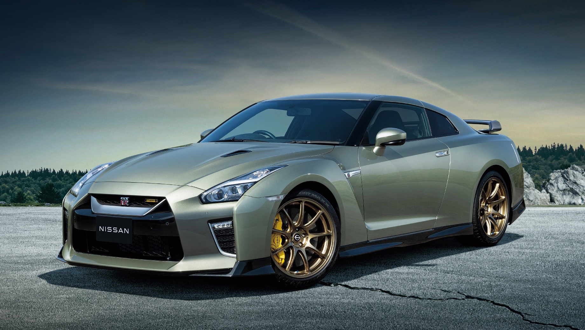

Nissan GT-R
Автомобиль достойный вас.
Как многие полагают, первый Скайлайн - далеко не R30, появившийся в 1981 году. Автомобиль появился гораздо раньше, и не у Nissan, а у японской марки Prince, начинавшей свою деятельность с производства истребителей для второй мировой и электромобилей.
История автомобиля началась в далеком 1955 году с Skyline ALSI-1 выпушенного Prince Motor Company.
Тогда же был создан прообраз легендарного гтр-а: у ALSI-1 в 1961году появилась спортивная версия в кузовах купе и кабриолет - Prince Skyline Sport BLRA-3, развивающая внушительные для того времени 96 л.с. С этого автомобиля началась массовая популярность Скайлайнов и любовь кинематографистов к этой модели, она снималась во многих популярных фильмах того времени.
В 1963 появилось второе поколение скайлайна - Prince Skyline S50.
Которое уже обрело отличительную по сей день черту скайлайнов: необычную заднюю оптику. Спортивная версия - Skyline 2000GT. Первый в истории модели, выпущенный на гонки. Он сразу же «привез» второе место, чуть-чуть не догнав легендарный Porsche 904GTS. Немыслимый результат, особенно, если учесть тот факт, что порш был гоночным болидом, а Скайлайн в то время – скромным четырехдверным седаном. В 1966 году Nissan объединяется с Prince и все автомобили начинают выпускаться под маркой Nissan.
В 1968 выходит третье поколение. Серия 1500.
Это время зарождения легенды. Настоящую славу автомобиль приобрел после появления первого GT-R выпущенного в 1969 году. С очень значительными для того времени характеристиками – двухлитровым двигателем S20, выдающим 160 сил, он продолжил и приумножил победы предшественников. В 1971 году появляется версия купе.
Подробнее на Autonews

Комплектации Nissan Skyline GT-R R32:
| Комплектация: |
Период выпуска: |
Цена (Йен): |
Марка двигателя: |
Марка кузова: |
| 2.6 GT-R |
02.1994-12.1994 |
4 545 |
RB26DETT |
E-BNR32 |
| 2.6 GT-R V spec |
02.1994-12.1994 |
5 260 |
RB26DETT |
E-BNR32 |
| 2.6 GT-R V spec II |
02.1994-12.1994 |
5 290 |
RB26DETT |
E-BNR32 |
Комплектации Nissan Skyline GT-R R33:
| Комплектация: |
Период выпуска: |
Цена (Йен): |
Марка двигателя: |
Марка кузова: |
| 2.6 GT-R |
02.1997-12.1997 |
4 825 |
RB26DETT |
E-BCNR33 |
| 2.6 GT-R V spec |
02.1997-12.1997 |
5 330 |
RB26DETT |
E-BCNR33 |
| 2.6 GT-R V spec II |
02.1997-12.1997 |
5 990 |
RB26DETT |
E-BCNR33 |
Комплектации Nissan Skyline GT-R R34:
| Комплектация: |
Период выпуска: |
Цена (Йен): |
Марка двигателя: |
Марка кузова: |
| 2.6 GT-R M spec Nur |
02.2002-08.2002 |
6 300 |
RB26DETT |
GF-BNR34 |
| 2.6 GT-R V spec II Nur |
02.2002-08.2002 |
6 100 |
RB26DETT |
GF-BNR34 |
| 2.6 GT-R M spec |
02.2002-08.2002 |
5 950 |
RB26DETT |
GF-BNR34 |
Современное поколение Nissan GT-R

В марте 2016 года компания Nissan привезла в Нью-Йорк обновленную версию своего спорткара GT-R. Выпускающийся с 2007 года автомобиль получил заметные изменения во внешности — полностью новое оформление передней части с увеличенной фирменной V-образной решеткой, усиленным капотом и новым спойлером. Последний обеспечил увеличение прижимной силы, а дополнительные накладки на порогах улучшили аэродинамические показатели, при этом клиренс остался без изменений. Кроме практических решений, изменения в экстерьере добавили автомобилю выразительности. Помимо этого, GT-R получил более жесткую силовую структуру кузова и модернизированную подвеску, что положительно сказалось на управляемости машины. Производитель также приложил усилия по повышению комфорта своего флагманского спорткара.
В салоне установлены улучшенные кресла, которые должны стать более удобными для долгих поездок. Новая передняя панель полностью обита цельным куском высококачественной кожи Nappa (опция). Если говорить об органах управления, то количество переключателей сократилось с 27 до 11, а подрулевые «лепестки» размещены непосредственно на руле, а не на колонке. Кроме того, в салоне появился восьмидюймовый сенсорный экран (на один дюйм больше прежнего), крупные иконки делают удобнее управление аудосистемой, навигатором, телефоном и другими мультимедийными устройствами; новый джойстик Display command на центральной консоли из карбона позволяет легко управлять меню дисплея без касания руками, что особенно удобно при езде на высокой скорости. Многофункциональная панель приборов позволяет водителю настраивать ее под свои предпочтения. Кроме того, GT-R стал тише внутри за счет дополнительной шумоизоляции и акустического лобового стекла.
Модернизированный GT-R получил более мощный мотор. Благодаря увеличению давления, а также индивидуальному управлению зажиганием для каждого цилиндра отдача поднялась с 545 л.с. до 570 л.с., а крутящий момент — с 628 до 637 Нм. Передача крутящего момента на колеса осуществляется с помощью шестиступенчатого «робота» с двойным сцеплением, который был модернизирован для улучшения характеристик, более мягкого и точного переключения. Кроме того, по заявлению производителя, GT-R 2017 модельного года избавлен от одной из характерных проблем — в предшествующей версии при начале движения с места с малым углом открытия дроссельной заслонки крутящий момент двигателя ограничивался, что вызывало задержки в реакции на нажатие педали акселератора. Теперь же в аналогичной ситуации начальное ускорение становится более плавным даже при малом угле открытия дроссельной заслонки. Можно добавить, что автомобиль оснастили новыми титановыми глушителями и системой Active Sound Enhancement, которая позволяет настраивать звук выхлопа.
Модернизация коснулась и ходовой части. За счет применения в амортизаторах новых корпусов клапанов удалось сократить их внутренние потери на трение. Усиление точек крепления подвески повысило стабильность автомобиля в поворотах и отзывчивость рулевого управления, а также позволило колесам реализовывать большую нагрузку за счет поддержания оптимального сцепления шин с дорожным покрытием. За торможение отвечают моноблочные тормозные суппорты Brembo (6-поршневые спереди и 4-поршневые сзади), плавающие составные вентилируемые тормозные диски Brembo (диаметр передних — 15,35 дюйма, задних — 15 дюймов) и тормозные колодки с минимальным содержанием стали. Система полного привода ATTESA E-TS работает таким образом, что при обычной езде GT-R ведет себя как заднеприводный автомобиль (перераспределение крутящего момента двигателя составляет 0:100 в пользу задней оси), но в зависимости от скорости движения, поперечного ускорения, угла поворота управляемых колес, дорожных условий и величины сцепления шин с дорогой крутящий момент от двигателя может передаваться также на переднюю ось, причем распределение момента по осям может доходить до соотношения 50:50.
Модернизация конструктивных элементов позволила усилить жесткость кузова. Помимо этого, автомобиль оснащен системой Nissan Advanced Air Bag System (AABS), в которую входят фронтальные подушки безопасности с двухступенчатым развертыванием, интеллектуальные ремни безопасности и датчики, определяющие параметры человека, сидящего в кресле, в зависимости от показаний которых система принимает решение о необходимости срабатывания и степени наполнения той или иной подушки безопасности. Также в состав стандартных систем включены боковые подушки, шторки безопасности, система динамической стабилизации Advanced Vehicle Dynamic Control (VDC) с тремя выбираемыми водителем режимами работы (Normal, R-Mode, Off), противобуксовочная система Electronic Traction Control System (TCS), антиблокировочная тормозная система с электронной системой распределения тормозного усилия, система заднего обзора RearView Monitor, контроль давления воздуха в шинах и автоматические фары.
Комплектации Nissan Skyline GT-R:
| Комплектация: |
Период выпуска: |
Цена (Руб): |
Марка двигателя: |
Марка кузова: |
| 3.8 AMT Black Edition |
08.2016-02.2020 |
7 626 000 |
VR38DETT |
R35 |
| 3.8 AMT Prestige |
08.2016-02.2020 |
7 726 000 |
VR38DETT |
R35 |